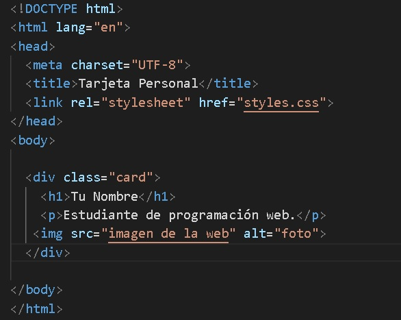

🙂↔️Temas Anteriores
1. Obtener el archivo
Entra en la web oficial:
code.visualstudio.com.
Haz clic en el botón azul "Download for Windows". Se
descargará el instalador (ej. VSCodeUserSetup-x64.exe).
2. Ejecución y Configuración (Paso Crítico)
Inicia el instalador. Durante el proceso, presta atención a la
Selección de tareas adicionales. Es fundamental
marcar todas las casillas:
- [x] Crear un acceso directo en el escritorio.
- [x] Agregar la acción "Abrir con Code" al menú contextual de archivos.
- [x] Registrar Code como editor para tipos de archivo admitidos.
Finalmente, haz clic en Instalar y luego en Finalizar.
Guía Rápida de Atajos y Trucos
Domina el teclado para programar con la velocidad de un profesional.
⚡ ATAJOS COMPLETOS VS CODE
📁 ARCHIVOS Y CARPETAS (PROYECTOS)
Ctrl + K → Ctrl + O → 📂 Abrir carpeta
Ctrl + P → Abrir archivo rápidamente
Ctrl + O → Abrir archivo
Ctrl + Shift + N → Nueva ventana de VS Code
Ctrl + W → Cerrar archivo
Ctrl + K → F → Cerrar carpeta
📂 EXPLORADOR Y NAVEGACIÓN
Ctrl + Shift + E → Explorador de archivos
Ctrl + B → Mostrar/ocultar barra lateral
Ctrl + Shift + F → Buscar en todo el proyecto
Ctrl + Shift + G → Control de versiones (Git)
Ctrl + Shift + D → Panel de depuración
Ctrl + Shift + X → Extensiones
✍️ EDICIÓN BÁSICA
Ctrl + X → Cortar línea
Ctrl + C → Copiar línea
Ctrl + V → Pegar
Ctrl + Z → Deshacer
Ctrl + Y → Rehacer
Ctrl + Enter → Nueva línea abajo
Ctrl + Shift + Enter → Nueva línea arriba
🧠 EDICIÓN AVANZADA (MAGIA REAL)
🖱️ Multicursor
Alt + Clic → Cursor múltiple
Ctrl + Alt + ↑ / ↓ → Agregar cursores
Ctrl + Shift + L → Seleccionar todas las coincidencias
🔎 Selección inteligente
Ctrl + D → Siguiente coincidencia
Ctrl + U → Deshacer selección
Ctrl + Shift + → / ← → Selección por palabras
Ctrl + Shift + K → Borrar línea
📋 Duplicar y mover
Shift + Alt + ↓ / ↑ → Duplicar línea
Alt + ↓ / ↑ → Mover línea
Shift + Alt + Drag → Copiar bloque
Ctrl + F → Buscar
Ctrl + H → Reemplazar
F3 / Shift + F3 → Siguiente / anterior
Alt + Enter → Seleccionar todas
🧹 FORMATO Y ORDEN
Shift + Alt + F → Formatear código
Alt + Z → Ajuste de línea
Ctrl + / → Comentar línea
🧘 VISTA Y PRODUCTIVIDAD
Ctrl + K → Z → Modo Zen
Ctrl + + / Ctrl + - → Zoom
Ctrl + 0 → Reset zoom
F11 → Pantalla completa
! → Estructura básica html
Ejercicio
- 📁 Crea una carpeta en Mis documentos.
- 🏷️ Asigna a la carpeta el nombre Ejercicio1_4to.
- 💻 Abre Visual Studio Code.
- 📂 Abre la carpeta creada anteriormente.
-
🧩 Verifica que las siguientes extensiones estén instaladas:
- ⚡ Live Server
- 🎨 Prettier
- ✏️ Auto Rename Tag
- 🔎 CSS Peek
- 🔒 Auto Close Tag
- 🌈 Color Highlight
⬇️ Si alguna no está instalada, instálala antes de continuar.
-
📄 Crea los siguientes archivos:
- index.html
- Comieze la edicion con la estructura básica en HTML ingrese ! (Abreviatura Emmet)
- styles.css
- ⌨️ Escribe el código correspondiente en cada archivo.
- 😊 Agrega emojis a tu proyecto utilizando el siguiente recurso:
Emoji Keyboard
Archivo HTML
